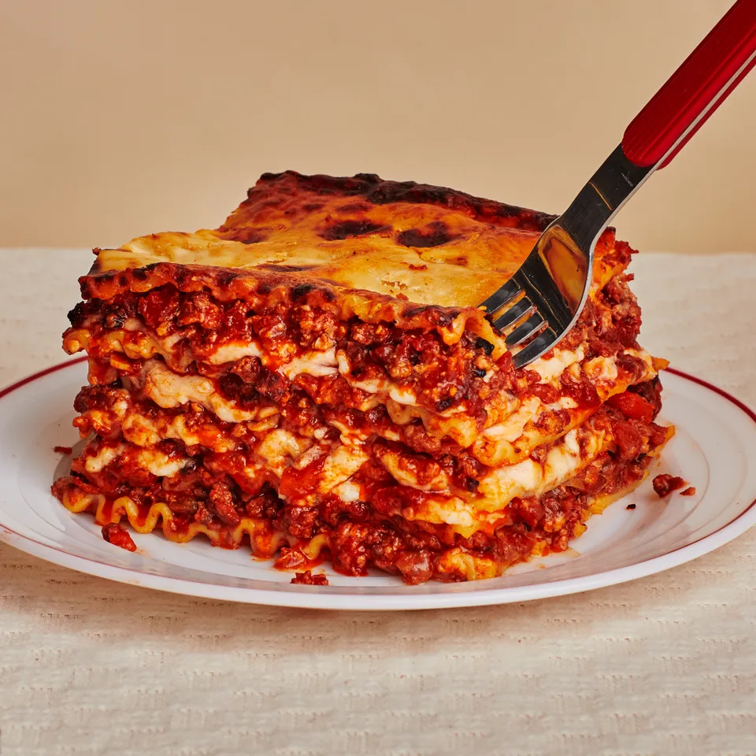

Lasagna Recipe
Home

Best Homemade Lasagna Recipe
This classic lasagna recipe is made with an easy meat sauce as the base. Layer the sauce with noodles and cheese, then bake until bubbly! This is great for feeding a big family and freezes well, too.
Ingredients
For the sauce
- 2 teaspoons extra virgin olive oil
- 500 grams ground beef chuck
- 1/2 medium onion, diced
- 1/2 large red or green capsicum, diced
- 2 cloves garlic, minced
- 1 can of tomato sauce
- 100 grams tomato paste
- 2 tablespoons chopped fresh oregano
- 1/4 cup chopped fresh parsley
- 1 tablespoon Italian seasoning
- 1 pinch garlic powder
- 1 tablespoon red or white wine vinegar
- 1 tablespoon to 1/4 cup of sugar to taste
- Salt
To assemble the lasagna
- 250 grams dry lasagna noodles
- 420 grams ricotta cheese
- 750 grams mozarella cheese
- 125 grams freshly grated Parmesan cheese
Method
- Put a large pot of salted water, with 1 tablespoon of salt for every 2 litres of water, on the stovetop on high heat. It can take a while for a large pot of water to come to a boil. This will be your pasta water. Prepare the sauce in the next steps while the water is heating.
- In a large skillet, heat 2 teaspoons of olive oil on medium-high heat. Add the ground beef and cook until it is lightly browned on all sides. Remove the beef with a slotted spoon to a bowl. Drain off all but a tablespoon of fat.
- Add the diced capsicum and onions to the skillet. Cook for 4 to 5 minutes, until the onions are translucent and the peppers softened. Add the minced garlic and cook half a minute more. Return the browned ground beef to the pan. Stir to combine, reduce the heat to low, and cook for another 5 minutes.
- Transfer the beef mixture to a medium-sized pot. Add the crushed tomatoes, tomato sauce, and tomato paste to the pot.
- Add the parsley, oregano, and Italian seasonings, adjusting the amounts to taste. Sprinkle with garlic powder, to taste.
- Add red or white wine vinegar. Stir in sugar, a tablespoon at a time, tasting after each addition, to taste.
- Add salt to taste, and note that you will later be adding Parmesan, which is salty.
- Bring the sauce to a simmer and then lower the heat to maintain a low simmer. Cook for 15 to 45 minutes, stirring often. Scrape the bottom of the pot every so often so nothing sticks to the bottom and scorches.
- Remove from heat.
- By now the salted water should be boiling, so add the dry lasagna noddles, and cook them al dente. Stir often to prevent from sticking and make sure that the water remains at full boil during the cooking.
- When ready, drain in a colander and rinse with cool water.
- Drizzle olive oil on a large rimmed baking sheet, and lay the cooked noodles on the sheet, turning them over so they get coated with olive oil.
- Preheat the oven to 190 degrees.
- In a casserole or lasagna dish, ladle a cup of sauce and spread it over the bottom of the dish. Arrange one layer of lasagne over the sauce. Ladle a third of the remaining sauce of the noodles.
- Spinkle a layer of mozzarella on top of the sauce. Add half of the ricotta cheese and sprinkle half the grated parmesan cheese evenly over the top.
- Apply the second layer of lasagna noodles, and top it with half the remaining sauce, mozzarella, ricotta cheese and Parmesan.
- Finish with another layer of noodles. Spread the ramining sauce of the top and sprinkle with remaining cheeses.
- Pop it in the oven and bake it for 45 minutes. Uncover it in the last 10 minutes to get a crunchy top.
- Cool and serve.